Google Scholar
Publications
2018
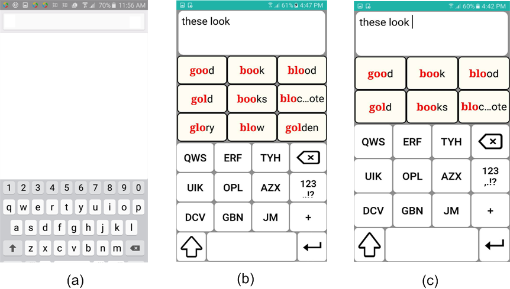
Ability-Based Optimization of Touchscreen Interactions
Sayan Sarcar, Jussi Jokinen, Antti Oulasvirta, Zhenxin Wang, Chaklam Silpasuwanchai, Xiangshi Ren. IEEE Pervasive Computing 2018.
PDF / Project Page
Sayan Sarcar, Jussi Jokinen, Antti Oulasvirta, Zhenxin Wang, Chaklam Silpasuwanchai, Xiangshi Ren. IEEE Pervasive Computing 2018.
PDF / Project Page
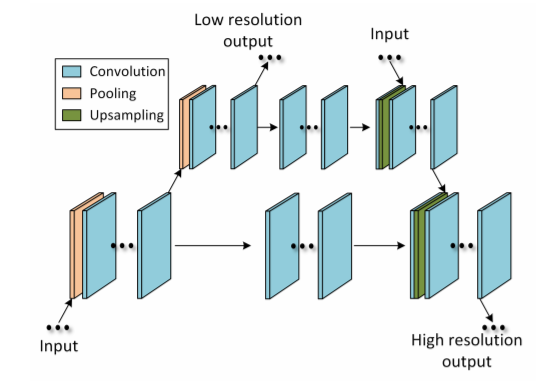
Outline Objects using Deep Reinforcement Learning
Zhenxin Wang, Sayan Sarcar, Jingxin Liu, Yilin Zheng, Xiangshi Ren. arXiv preprint arXiv:1804.04603.
PDF
2017
Zhenxin Wang, Sayan Sarcar, Jingxin Liu, Yilin Zheng, Xiangshi Ren. arXiv preprint arXiv:1804.04603.
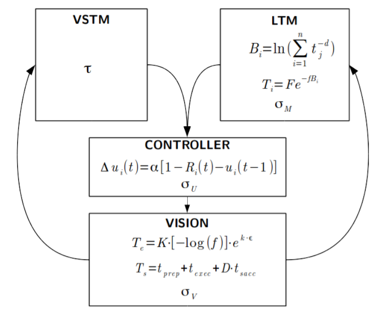
Modelling Learning of New Keyboard Layouts
Jussi Jokinen, Sayan Sarcar, Antti Oulasvirta, Chaklam Silpasuwanchai, Zhenxin Wang, Xiangshi Ren. ACM CHI 2017 (Best Paper Award).
PDF / Project Page
Jussi Jokinen, Sayan Sarcar, Antti Oulasvirta, Chaklam Silpasuwanchai, Zhenxin Wang, Xiangshi Ren. ACM CHI 2017 (Best Paper Award).
PDF / Project Page
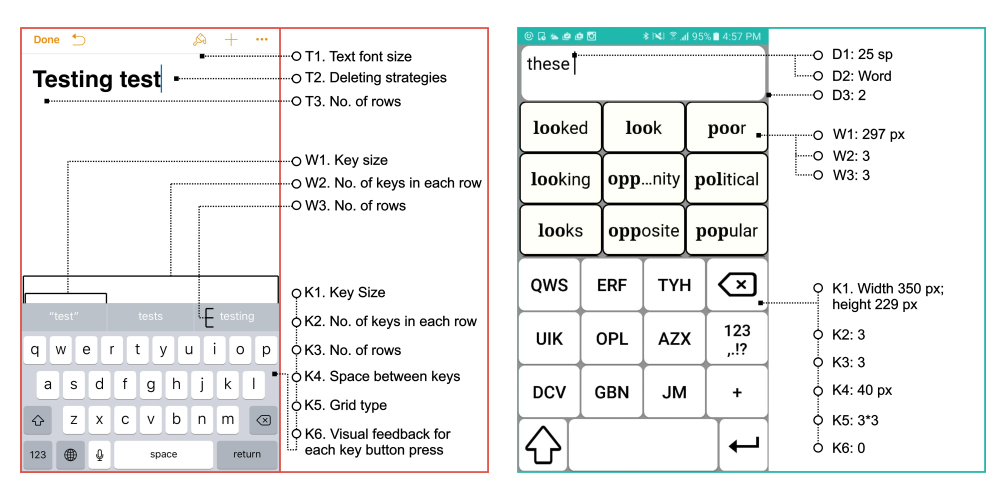
Ability-Based Optimization: Designing Smartphone Text Entry Interface for Older Adults
Sayan Sarcar, Jussi Jokinen, Antti Oulasvirta, Xiangshi Ren, Chaklam Silpasuwanchai, Zhenxin Wang. INTERACT 2017.
PDF
2016
Sayan Sarcar, Jussi Jokinen, Antti Oulasvirta, Xiangshi Ren, Chaklam Silpasuwanchai, Zhenxin Wang. INTERACT 2017.
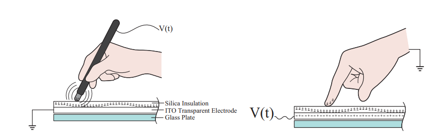
EV-Pen: Leveraging Electrovibration Haptic Feedback in Pen Interaction
Qinglong Wang, Xiangshi Ren, Sayan Sarcar, Xiaoying Sun. ACM ISS 2016 (Best Paper Award).
PDF
Qinglong Wang, Xiangshi Ren, Sayan Sarcar, Xiaoying Sun. ACM ISS 2016 (Best Paper Award).
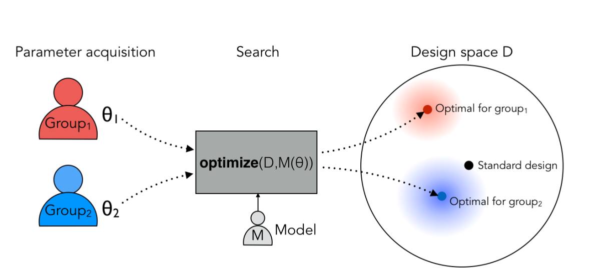
Towards Ability-based Optimization for Aging users
Sayan Sarcar, Jussi Jokinen, Antti Oulasvirta, Chaklam Silpasuwanchai, Zhenxin Wang, Xiangshi Ren. ACM ITAP 2016.
PDF
Sayan Sarcar, Jussi Jokinen, Antti Oulasvirta, Chaklam Silpasuwanchai, Zhenxin Wang, Xiangshi Ren. ACM ITAP 2016.
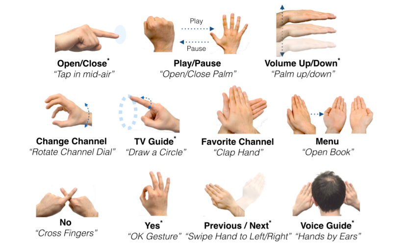
Designing Mid-Air TV Gestures for Blind People using User-and Choice-based Elicitation Approaches
Nem Khan Dim, Chaklam Silpasuwanchai, Sayan Sarcar, Xiangshi Ren. ACM DIS 2016.
PDF
Nem Khan Dim, Chaklam Silpasuwanchai, Sayan Sarcar, Xiangshi Ren. ACM DIS 2016.
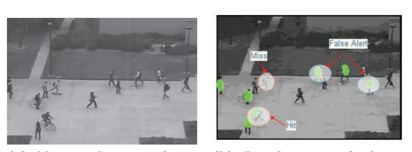
Limitations with Measuring Performance of Techniques for Abnormality Localization in Surveillance Video and how to Overcome them?
Manoj Kumar Sharma, Sayan Sarcar, Debdoot Sheet, Prabir Kumar Biswas. ACM ICVGIP 2016.
PDF
2014
Manoj Kumar Sharma, Sayan Sarcar, Debdoot Sheet, Prabir Kumar Biswas. ACM ICVGIP 2016.
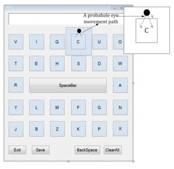
Design and Evaluation of a Dwell-free Eye Typing Technique
Tuhin Chakraborty, Sayan Sarcar, Debasis Samanta. Extended Abstract in ACM CHI 2014.
PDF
2013
Tuhin Chakraborty, Sayan Sarcar, Debasis Samanta. Extended Abstract in ACM CHI 2014.
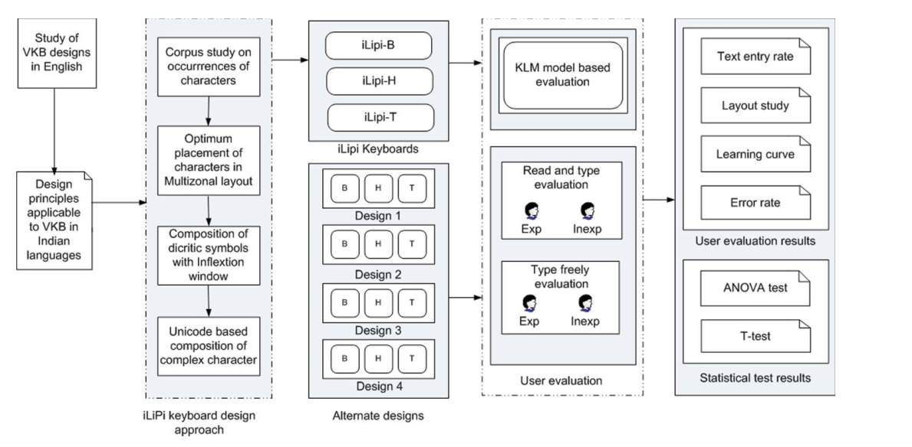
An approach to Design Virtual Keyboards for Text Composition in Indian Languages
Debasis Samanta, Sayan Sarcar, Soumalya Ghosh. International Journal of Human-Computer Interaction (IJHCI).
PDF
Debasis Samanta, Sayan Sarcar, Soumalya Ghosh. International Journal of Human-Computer Interaction (IJHCI).
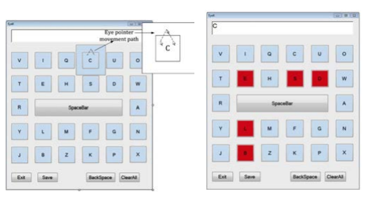
EyeK: an Efficient Dwell-free eye Gaze-based Text Entry System
Sayan Sarcar, Prateek Panwar, Tuhin Chakraborty. ACM APCHI 2013.
PDF
Sayan Sarcar, Prateek Panwar, Tuhin Chakraborty. ACM APCHI 2013.
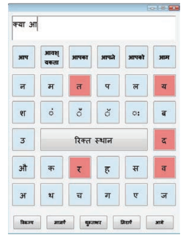
Eyeboard++: An Enhanced Eye Gaze-based Text Entry System in Hindi
Sayan Sarcar, Prateek Panwar. ACM APCHI 2013.
PDF
Sayan Sarcar, Prateek Panwar. ACM APCHI 2013.
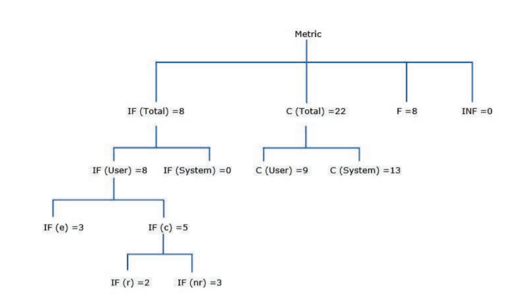
Error Quantifying Metrics for Text Entry Systems Augmented with Word Prediction
Manoj Kumar Sharma, Pradipta Kumar Saha, Sayan Sarcar, Debasis Samanta. ACM APCHI 2013.
PDF
2012
Manoj Kumar Sharma, Pradipta Kumar Saha, Sayan Sarcar, Debasis Samanta. ACM APCHI 2013.
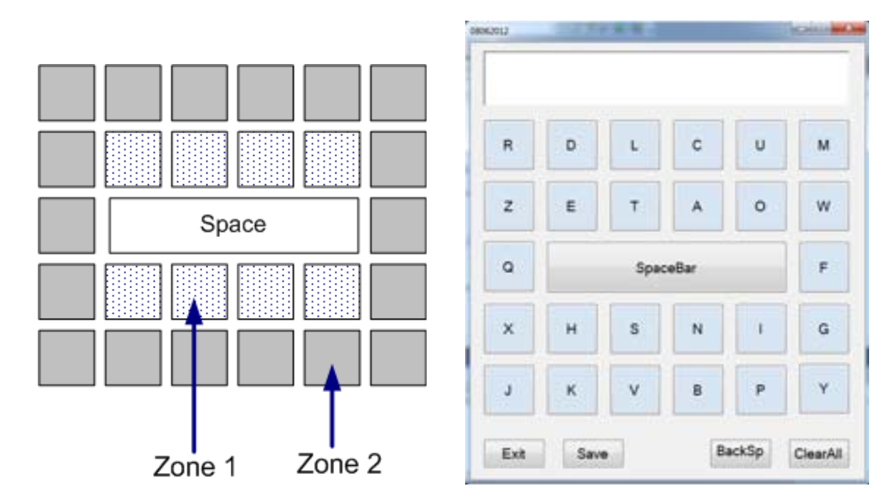
EyeBoard: A Fast and Accurate Eye Gaze-based Text Entry System
Prateek Panwar, Sayan Sarcar, Debasis Samanta. IEEE IHCI 2012.
PDF
2010
Prateek Panwar, Sayan Sarcar, Debasis Samanta. IEEE IHCI 2012.
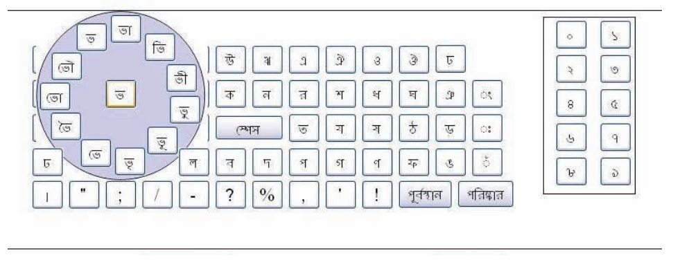
Virtual Keyboard Design: State of the Arts and Research Issues
Sayan Sarcar, Soumalya Ghosh, Pradipta Kumar Saha, Debasis Samanta. IEEE TechSym 2010.
PDF
Sayan Sarcar, Soumalya Ghosh, Pradipta Kumar Saha, Debasis Samanta. IEEE TechSym 2010.
Posters
2018
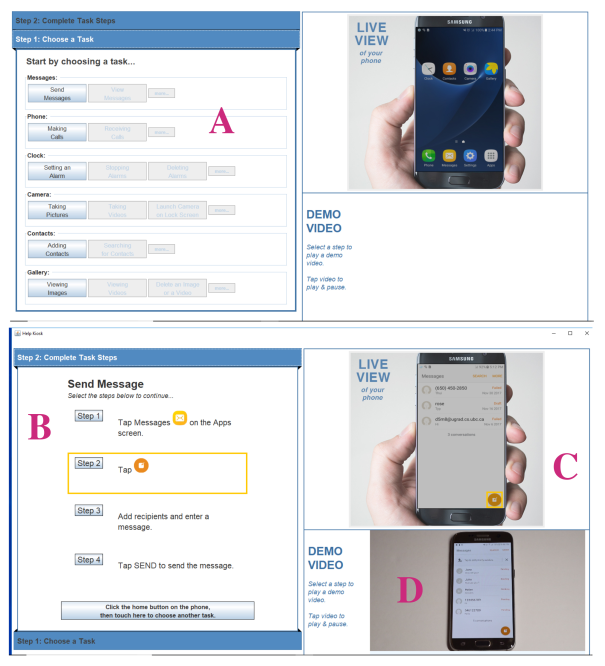
Help Kiosk: An Augmented Display System to Assist Older Adults to Learn How to Use Smart Phones
Zachary Wilson, Helen Yin, Sayan Sarcar, Rock Leung, Joanna McGrenere. ACM ASSETS 2018.
PDF
Zachary Wilson, Helen Yin, Sayan Sarcar, Rock Leung, Joanna McGrenere. ACM ASSETS 2018.